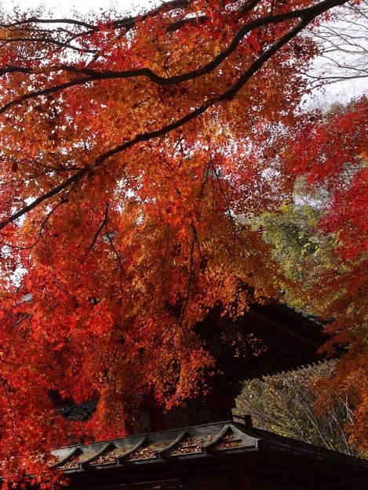

高尾山 四季→秋 エリア→東京西部

このスポットには
高尾山は都心から電車で約1時間と好位置にある自然の宝庫で標高は599m。1967(昭和42)年に明治の森高尾国定公園に指定された山内には、約1200種の植物、約100種の野鳥、約5000種の昆虫が生息している。中でも秋のモミジは格別で、山頂のもみじ台や薬王院の周辺、ケーブルカー清滝駅、高尾山駅など約1ヶ月に渡って多くの登山者の目を楽しませる。麓の清滝駅から標高472mの高尾山駅までケーブルカーで結ばれた沿線にはオオモミジやイロハモミジなどが群生し、最盛期には赤や黄色のトンネルを楽しめる。（https://koyo.walkerplus.com/detail/ar0313e13090/ より抜粋）
このスポットには
こんな歴史が・・・
高尾山薬王院の開山は西暦744年奈良時代に遡る。戦国時代は高尾山は北条氏の領地で北条氏の定めた竹林伐採禁止の法により守られた。その後北条氏が豊臣秀吉に破れ、地域一帯は徳川家康が治めた。
所在地
東京都八王子市高尾町
最寄り駅
JR中央本線 高尾駅